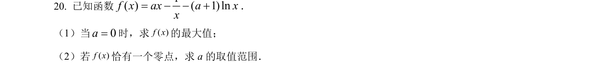
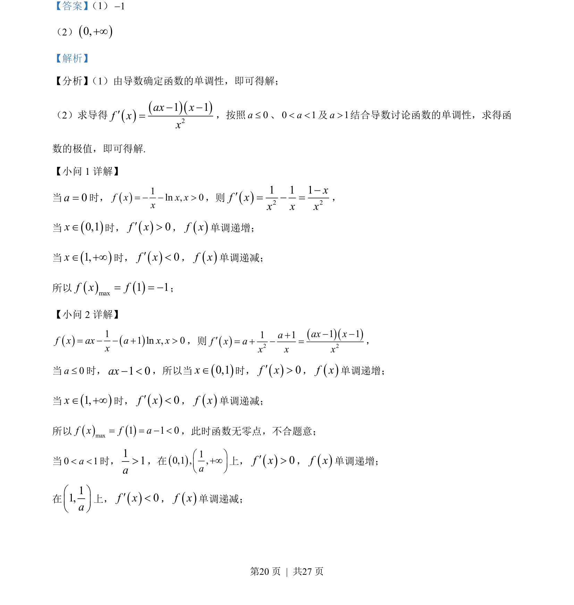
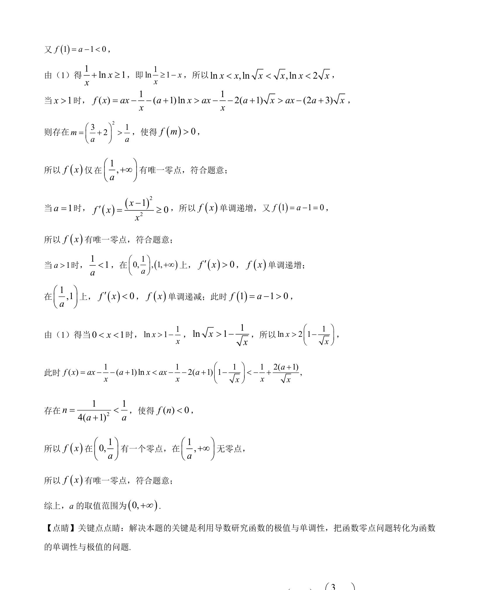

考点：导数应用 函数单调性 极值 分类讨论

本题通过求导讨论含参数函数的单调性与极值，重点考查分类讨论思想的应用。


📄 原 PDF 第 20 页：
素材/真题/吉林/2008-2024·（吉林）数学高考真题/2022年高考数学试卷（文）（全国乙卷）（解析卷）.pdf
【答案】 （1）1-
（2）()0,+¥
【解析】
【分析】 （1）由导数确定函数的单调性，即可得解；
（2）求导得()()()21 1ax xf xx- -¢=，按照0a£、0 1a< <及1a>结合导数讨论函数的单调性，求得函
数的极值，即可得解.
【小问 1 详解】
当0a=时，()1ln , 0f x x xx= - - >，则()2 21 1 1xf xx x x-¢= - =，
当()0,1xÎ时，()0f x¢>，()f x单调递增；
当()1,xÎ +¥时，()0f x¢<，()f x单调递减；
所以()()max1 1f x f= = -；
【小问 2 详解】
()()11 ln , 0f x ax a x xx= - - + >，则()()()2 21 11 1ax xaf x ax x x- -+¢= + - =，
当0a£时，1 0ax- <，所以当()0,1xÎ时，()0f x¢>，()f x单调递增；
当()1,xÎ +¥时，()0f x¢<，()f x单调递减；
所以()()max1 1 0f x f a= = - <，此时函数无零点，不合题意；
当0 1a< <时，11a>，在()10,1 , ,aæ ö+¥ç ÷è ø上，()0f x¢>，()f x单调递增；
在11,aæ öç ÷è ø
上，()0f x¢<，()f x单调递减；